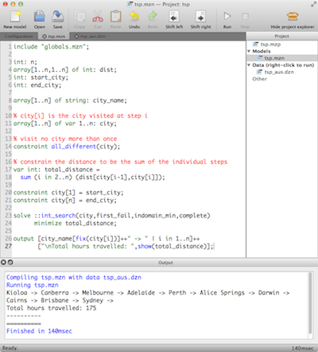

{% assign ideversion = site.data.version["ideversion"] %}
{% assign mznversion = site.data.version["mznversion"] %}

<div class="container">

    <div class="row">
        <div class="col-lg-12">
            <h1 class="page-header">
                MiniZinc Software
            </h1>
        </div>
    </div>

    <div class="row">
        <div class="col-md-12">
            <h2>The MiniZinc compiler and IDE</h2>
        </div>
    </div>

    <div class="row">
        <div class="col-md-8">
            <p>
                The compiler is the heart of the MiniZinc tool chain. It translates constraint models into
                FlatZinc, a language that is understood by a wide range of solvers. MiniZinc comes with a simple
                Integrated Development Environment, the MiniZinc IDE, which makes it easy to develop and run
                constraint models.
            </p>
            
            <p>
                Both the compiler tool chain and the IDE are available as free and open source software.
            </p>

            <h2>Bundled binary packages</h2>

            <p>You can download a completely self-contained package including MiniZinc {{ mznversion }},
                the MiniZinc IDE {{ ideversion }}, and the G12 and Gecode solvers here:
            </p>

            <ul>
                <li><a class="download" href="https://github.com/MiniZinc/MiniZincIDE/releases/download/{{ ideversion }}/MiniZincIDE-{{ ideversion }}-bundled-setup-32.exe">32 bit Windows installer</a></li>
                <!--  <li><a class="download" href="<?=$downloadWin64?>">64 bit Windows installer</a></li> -->
                <li><a class="download" href="https://github.com/MiniZinc/MiniZincIDE/releases/download/{{ ideversion }}/MiniZincIDE-{{ ideversion }}-bundled.dmg">Mac OS X installer</a></li>
                <li><a class="download" href="https://github.com/MiniZinc/MiniZincIDE/releases/download/{{ ideversion }}/MiniZincIDE-{{ ideversion }}-bundle-linux-x86_64.tgz">64 bit Linux binary archive</a></li>
                <li><a class="download" href="https://github.com/MiniZinc/MiniZincIDE/releases/download/{{ ideversion }}/MiniZincIDE-{{ ideversion }}-bundle-linux-x86_32.tgz">32 bit Linux binary archive</a></li>
            </ul>

            <h2>Source code</h2>
            
            <p>
                The source code of the compiler and the IDE is available from
                our <a href="https://github.com/MiniZinc">GitHub project page</a>.
                MiniZinc is distributed under the <a href="LICENSE.txt">Mozilla Public License version 2.0</a>.
                The MiniZinc IDE is developed using the <a href="http://qt-project.org">Qt toolkit</a>,
                which is available under <a href="http://qt-project.org/products/licensing">several licenses
                    including the LGPL</a>.
            </p>
            
            <h2>Bugs</h2>

            <p>
            We are grateful for feedback on MiniZinc, including bug reports, feature requests and ideas for improvements.
            </p>

            <p>For general discussions about MiniZinc, please go to the <a href="https://groups.google.com/d/forum/minizinc">discussion forum</a>.
            </p>

            <p>To report an issue, please use the following issue trackers:</p>

            <ul>
                <li><a href="https://github.com/MiniZinc/libminizinc/issues">MiniZinc compiler issues</a></li>
                <li><a href="https://github.com/MiniZinc/MiniZincIDE/issues">MiniZinc IDE issues</a></li>
                <li><a href="https://github.com/MiniZinc/minizinc.github.io/issues">MiniZinc web site issues</a></li>
            </ul>
            
            <h2 id="flatzinc">FlatZinc implementations</h2>
            <ul>
                <li><a href="http://www.gecode.org/flatzinc.html">Gecode/FlatZinc</a>.
                    The generic constraint development environment provides a FlatZinc
                    interface.  The source code for the interface stripped of all Gecode-specific
                    code is also available.
                </li>

                <li><a href="https://github.com/chuffed/chuffed">Chuffed</a>.
                    A C++ FD solver using lazy clause generation.
                </li>

                <li><a href="http://choco.emn.fr">Choco 3</a>.
                    A Java FD solver.
                </li>

                <li><a href="http://eclipseclp.org/">ECLiPSe</a>.
                    The ECLiPSe Constraint Programming System provides support for evaluating
                    FlatZinc using ECLiPSe's constraint solvers.  MiniZinc models can be embedded
                    into ECLiPSe code in order to add user-defined search and I/O facilities to
                    the models.
                </li>

                <li><a href="http://ie.technion.ac.il/~ofers/HCSP/index.html">HaifaCSP</a>.
                    A C++ FD solver using SAT solving algorithms.
                </li>

                <li><a href="http://jacop.osolpro.com/">JaCoP</a>.
                    A Java-based constraint solver with an interface to FlatZinc (from version 4.2).
                </li>

                <li><a href="https://dtai.cs.kuleuven.be/software/minisatid">MinisatID</a>.
                    An implementation of a search algorithm combining techniques from the fields 
                    of SAT, SAT Module Theories, Constraint Programming and Answer Set Programming, has an 
                    interface to FlatZinc.
                </li>

                <li><a href="https://github.com/ehebrard/Mistral-2.0">Mistral 2.0</a>. 
                    A C++ FD solver.
                </li>

                <li><a href="http://www.opturion.com/cpx.html">Opturion CPX</a>.
                    A Constraint Programming solver with eXplanation system, has an 
                    interface to FlatZinc.
                </li>

                <li><a href="http://code.google.com/p/or-tools">OR-Tools</a>.
                    A set of Operations Research tools developed at Google.
                </li>

                <li><a href="http://www.it.uu.se/research/group/astra/software">OscaR/CBLS</a>.
                    A FlatZinc interface to the Constraint Based Local Search component of the
                    <a href="https://www.info.ucl.ac.be/~pschaus/oscar.html">OscaR</a> toolkit.
                </li>

                <li><a href="http://picat-lang.org">Picat CP/SAT</a>.
                </li>

                <li><a href="http://www.sics.se/isl/sicstuswww/site/index.html">SICStus Prolog</a>.
                    Includes a library for evaluating FlatZinc (from version 4.0.5).
                </li>

                <li><a href="http://scip.zib.de/">SCIP</a>.
                    A framework for Constraint Integer Programming, has an interface to FlatZinc.
                </li>
                
                <li><a href="https://github.com/informarte/yuck">Yuck</a>.
                    A local search solver with an interface to FlatZinc.
            </ul>

            <h2>G12 MiniZinc Distribution 1.6</h2>
            <p>The previous version of MiniZinc, version 1.6, is still available from the
                <a href="g12distrib.html">G12 MiniZinc Distribution</a>.
                The G12 MiniZinc Distribution contains executables for the G12
                MiniZinc-to-FlatZinc converter and the G12 FlatZinc interpreter.
                It also contains the source code for the MiniZinc-to-FlatZinc converter,
                a yacc-based parser for FlatZinc and lots of example models and documentation.
            </p>

        </div>
        <div class="col-md-4">
            
        </div>
    </div>
</div>
